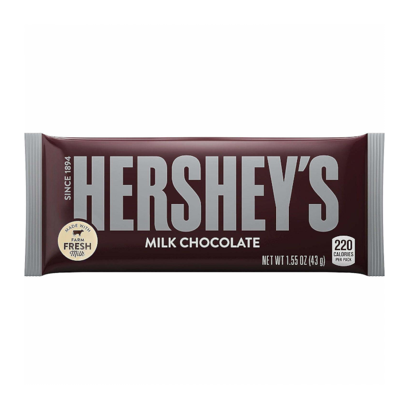

Hershey’s has a delicious, unique taste because of the farm fresh milk that is used! HERSHEY'S Milk Chocolate is one of the only milk chocolate brands in the world that still uses fresh milk in its production, giving it a distinctive taste.hershey's chocolate is available across the United States, and in over 60 countries worldwide.It has three large distribution centers with modern labor management systems. In addition, Hershey is a member of the World Cocoa Foundation. It is also associated with the Hersheypark Stadium and the Giant Center.
In 1896, Hershey built a milk-processing plant so he could create and refine a recipe for his milk chocolate candies. In 1899, he developed the Hershey process, which is less sensitive to milk quality than traditional methods. In 1900, he began manufacturing Hershey's Milk Chocolate Bars, also known as Hershey's Bars or Hershey Bars.
In 1903, Hershey began construction of a chocolate plant in his hometown of Derry Church, Pennsylvania, later known as Hershey, Pennsylvania. The town was an inexpensive place for the workers and their families to live, though the factory was built without windows, so that employees would not be distracted. To increase employee morale, Hershey provided leisure activities and created what would later become Hersheypark. The milk chocolate bars from this plant proved popular, and the company grew rapidly
